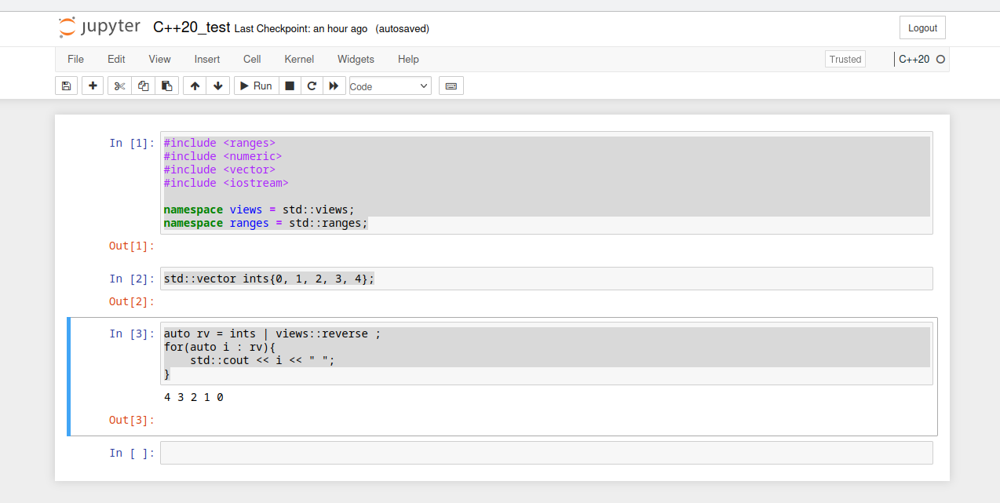

Cling Jupyter Notebook
Cling Jupyter Notebook
最近开始学习C++20相关的特性，需要经常性地写一些代码进行验证工作，试用了一下cling，感觉不错，记录一下。
之前也留意到xeus-cling项目，尝试了用conda拉取失败，遂放弃，自己动手编译吧。
编译
按照Readme来编译还是有点小坑的，主要有以下：
- cmake 指令问题，大小写有点坑，这个issue算是解决了。
- OOM问题：需要编译cling和root-project的llvm工程，如果采用多线程编译的话，笔记本32G的内存还是会有内存不够用的情况。将线程数量调小就可以避免，问题不大。编译完成后，cling-build目录竟然有95GB。
Jupyter notebook
默认的安装目录为/usr/local，不过Jupyter相关的文件并没有安装到这个目录下，需要自己到工程目录下去找 cling/tools/Jupyter。
自行安装配置好Python3的venv后，按照ReadMe的说明配置一下就可以。
如果要尝试一下C++20的特性，可以参考#520为Jupyter notebook增加 C++20 的入口。不过需要留意一下编译时gcc的版本，笔者用的Debian 12自带的默认gcc版本为12.2，支持大部分C++20的语言特性。gcc对C++语言标准的支持可参考C++20 Support in GCC。
效果
#include <ranges>
#include <numeric>
#include <vector>
#include <iostream>
namespace views = std::views;
namespace ranges = std::ranges;
std::vector ints{0, 1, 2, 3, 4};
auto rv = ints | views::reverse ;
for(auto i : rv){
std::cout << i << " ";
}
